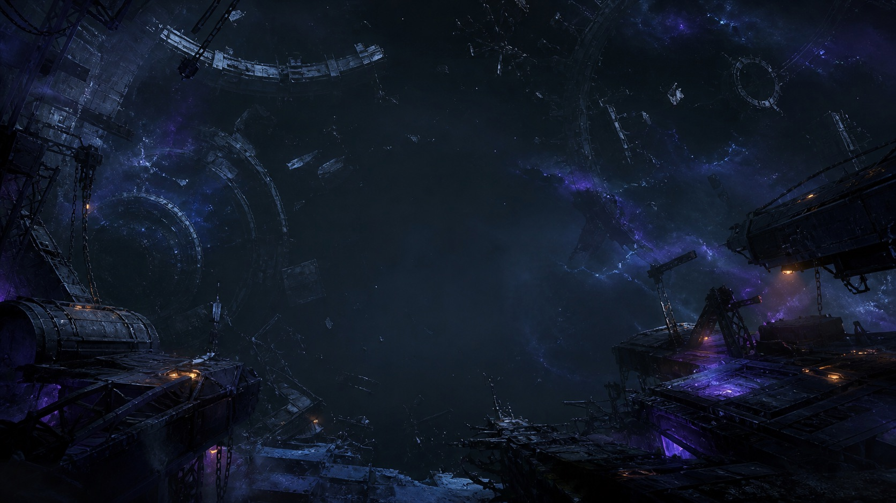
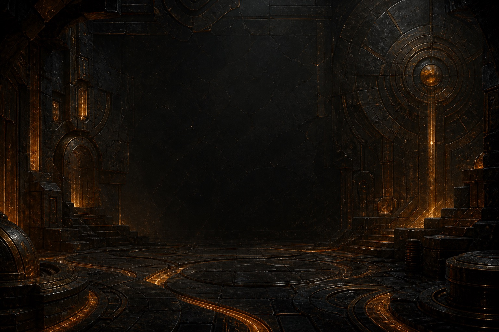
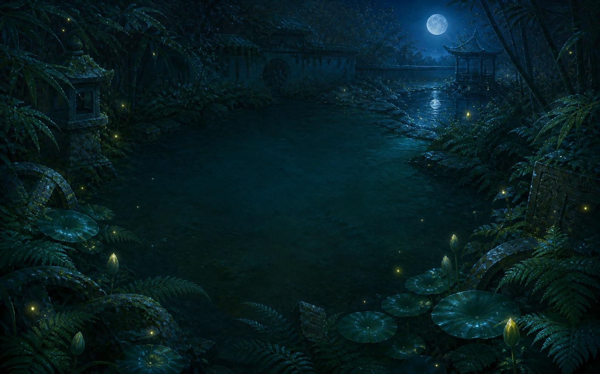
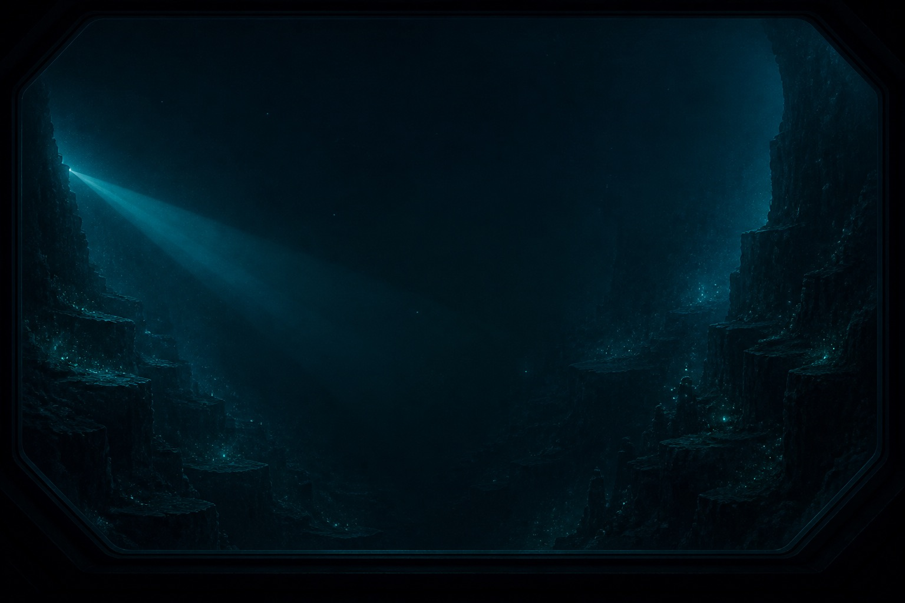
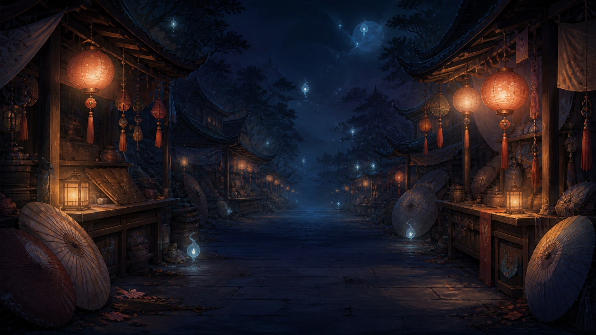
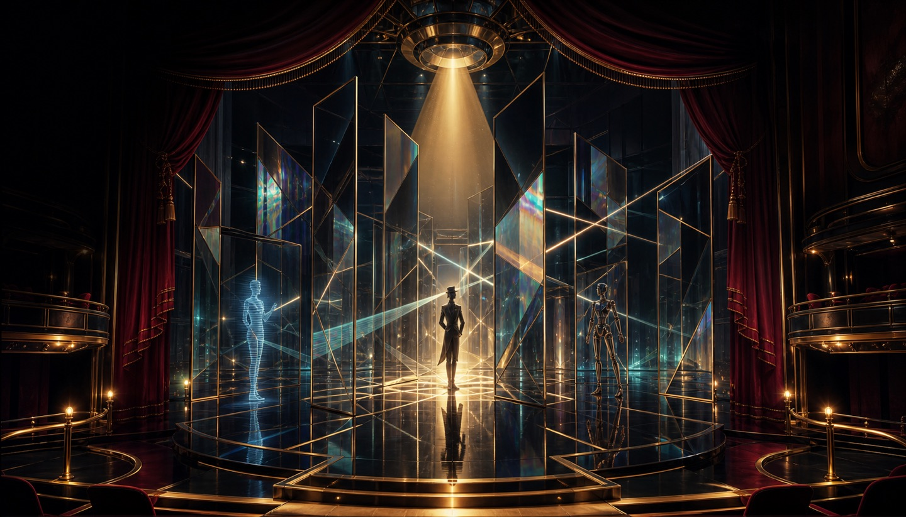

ALL TEN REALMS ARE OPEN
十个世界，
等你入境。
同一座谜游馆里，没有两扇相同的门。驾驶回收艇、唤醒灵龙、打理红线，或在镜影舞台安排一场完美演出——每款都保留经典规则，也拥有自己的视觉、声音与节奏。
浏览全部游戏
10
全境开放
无需登录 · 自动存档
手机与桌面均可游玩
CHOOSE YOUR PORTAL
今晚，先去哪里？
点击任意画面，进入完整游戏

航行玩法 惯性漂移
星滞回收局
驾船穿过残骸区，借助惯性与引力锚停靠，收回全部能源芯。
进入游戏↗
空间玩法 滚动交换
记忆方舟
滚动遗迹核心，让地面与核心表面的记忆符印逐面归位。
进入游戏↗解结玩法 交线重排
月老红线事务所
挪动缘分簿上的名字，解开每一处红线交点，让缘分各归其位。
进入游戏↗
点灯玩法 无重光照
夜庭萤火
安放不会彼此照见的萤火精灵，让沉睡花圃的每个角落重获光亮。
进入游戏↗
探测玩法 回声推理
深海回声站
从海沟边缘发射声呐，根据吸收、偏折与回声锁定隐藏能量体。
进入游戏↗连网玩法 旋转供能
风暴灯塔网
旋转漂浮的航标模块，让主灯塔的能量抵达每一座远海信标。
进入游戏↗
撤离玩法 连群清场
夜市精灵撤离
送走成群结队的灯灵，让摊位在闭市前腾空，追求漂亮的连锁分数。
进入游戏↗建造玩法 航路连岛
云海航路
架设互不交叉的单双航线，满足各浮空港需求并连成完整航运网。
进入游戏↗寻径玩法 灵珠闭环
灵龙巡脉
循黑白灵珠铺成唯一龙脉闭环，让沉睡灵龙沿山河苏醒巡游。
进入游戏↗
排演玩法 镜面视线
镜影大剧院
安排三类演员穿行镜廊，让观众席看到恰好数量的真身与映像。
进入游戏↗THE SAME LOGIC CAN DREAM IN TEN DIFFERENT LANGUAGES.
规则完整视觉独立离线可玩隐私优先